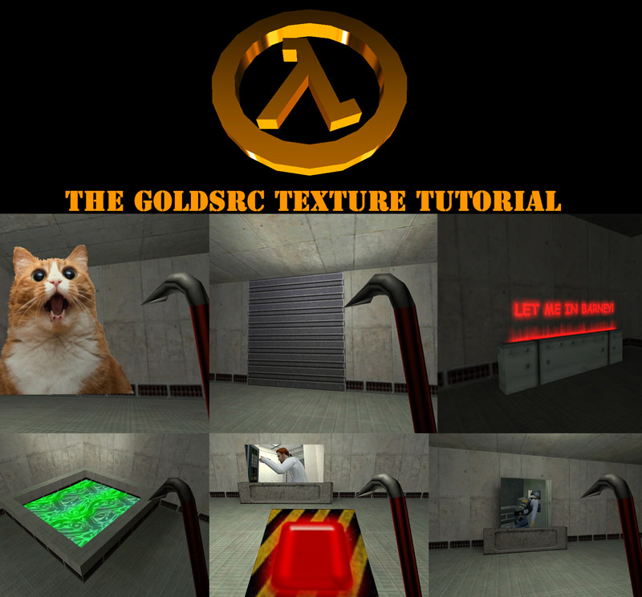
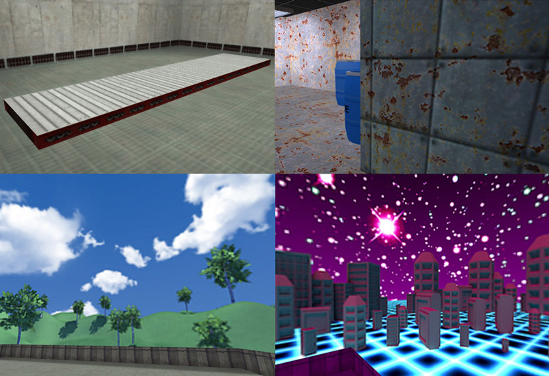

1)Welcome to the GoldSrc Texture tutorial. GoldSrc textures must be BMP format with an 8-bit depth (256 colors index/palette) and dimensions must be in multiples of 16 though it is preferable to have them in powers of 2 because they are generally easier to work with. An example of power of 2 is: 64X64, 128X128, 256X256, and a maximum of 512X512. Keep in mind there is no texture compression so your texture filesizes can build up quickly; because of this I also stress to use 512X512 very sparingly if you are making maps for multiplayer server download. If you are making a stand-alone mod then ignore this warning. Final note is that as of 2019, Valve updated the steam GoldSrc engine to better handle non-power2 texture display. The programs we will be using both turn the image into 8bit index and pack the indexed BMP into wadfiles.
2) Textures must be stored in WAD files which are packages that hold textures. Wad files can be created by several different programs:
1. "Wally" which is an image asset toolkit for Half-Life & Quake. It is the most common and one of the oldest wad creation, editing and viewing utilities.
2. "HL-Tools" is a hybrid wad & sprite viewer/editor that is more modern.
3. "Wadmaker" is a recent commandline program which supports the widest range of formats and has many quality of life fixes.
This tutorial will be focusing on Wadmaker due to its ease of use, support for modern formats, and automatic 8bit indexing, but will still include Wally for viewing, edits & manual indexing legacy guides. These WAD files can also be compiled into your map BSP for custom downloadable maps by using a CSG command. It is also of note that the image viewer IRFANVIEW can view the contents of Wadfiles. If you would like to see it before reading my tutorial, there is a tutorial on TWHL.info on texture creation by the author that can be viewed here.
3) There are several types of textures that are designated by special characters. Normal textures need no special characters. The special texture characters are as follows:
{ transparent
! water
+ (number 0 to 9) animated
+A toggled/animate
scroll (for use on func_conveyor only)
- (number 0 to 9) Random tiling [I will not be covering random tiling since it is only supported in software mode]
Texture names cannot be any longer than 15 characters and spaces are NOT allowed.
4)Download Wadmaker to get started.
Optionally, you can pick up Wally and HL-Tools.
This tutorial has been updated to mainly use Wadmaker but will still include legacy manual 8-bit indexing with photoshop. While this tutorial is written for 8-bit BMP creation in Photoshop, I have alternative methods shown within that use the program IRFANVIEW to convert & dither images from other paint programs to 8-bit BMP.
Another option is that Wally has as a built-in paint function to create 8bit textures. A tutorial on this exists here: this tutorial.
Lastly, I have included an example map & resources of textures created in this tutorial for you to examine: Download here.
Part1: Creating Basic Textures
Part2: Creating Masked Transparent Textures
Part3: Creating Additive Transparent Textures
Part4: Creating Animated Textures
Part5: Creating Toggled Textures
Part6: Creating Water Textures
Part7: Creating Scrolling Textures
Part8: Creating Skies
Part9: Creating Detail Textures
Return to Tutorials